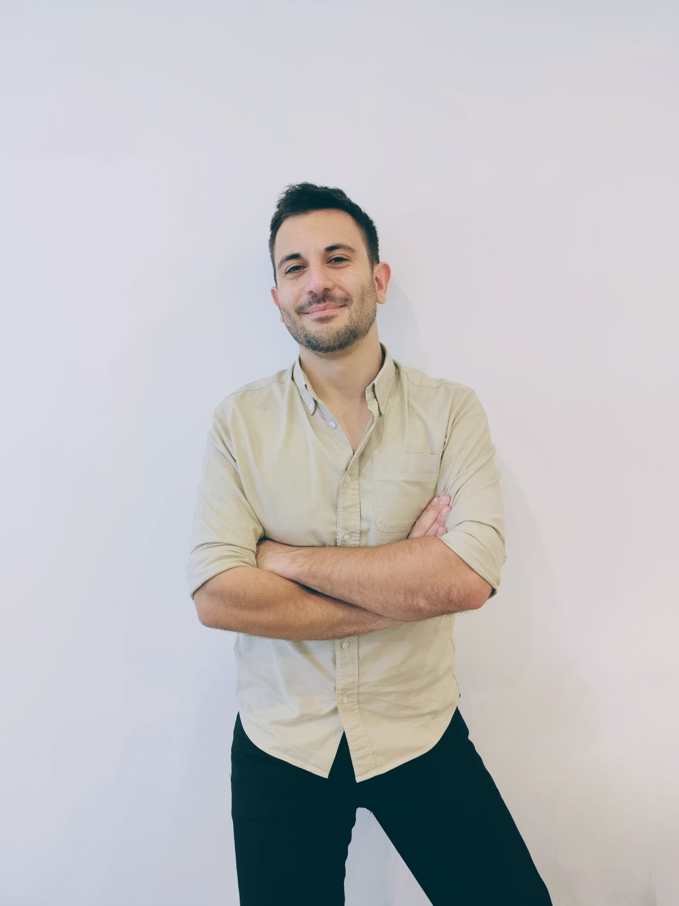
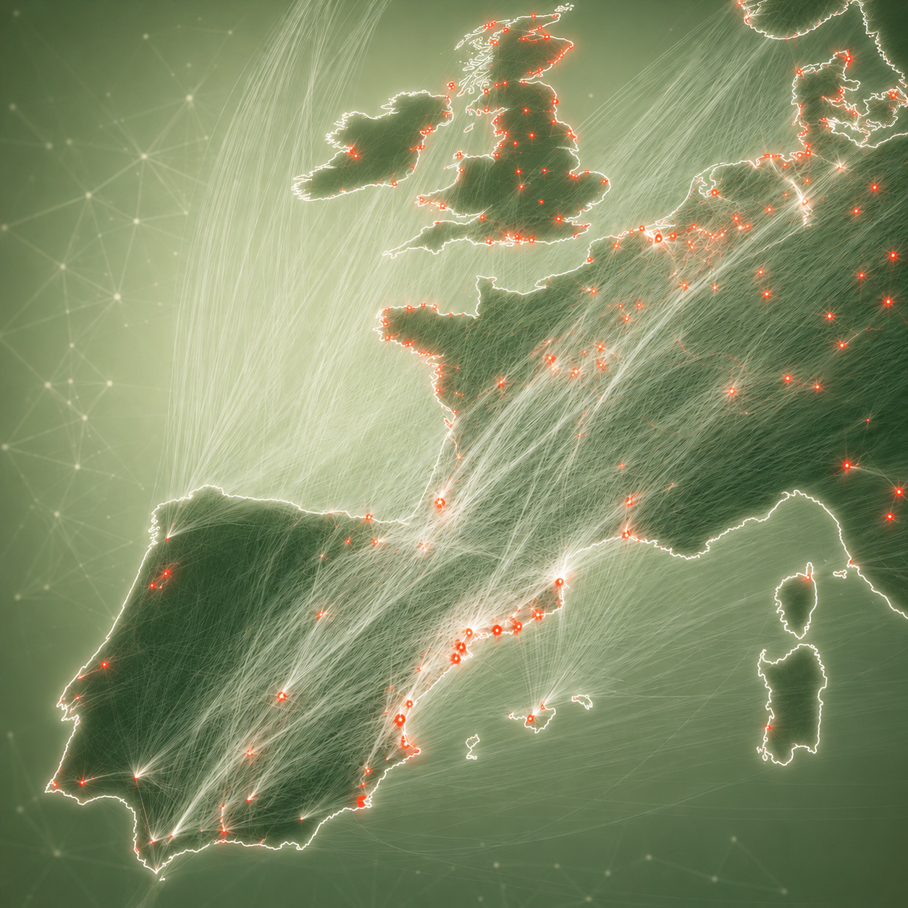
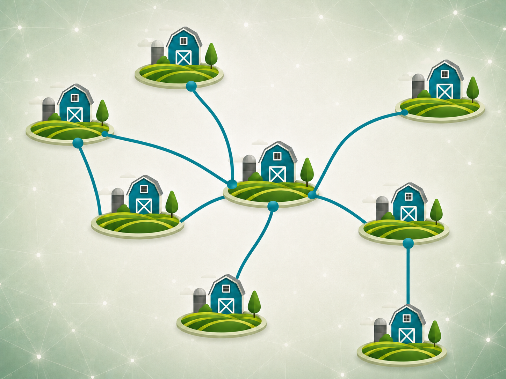
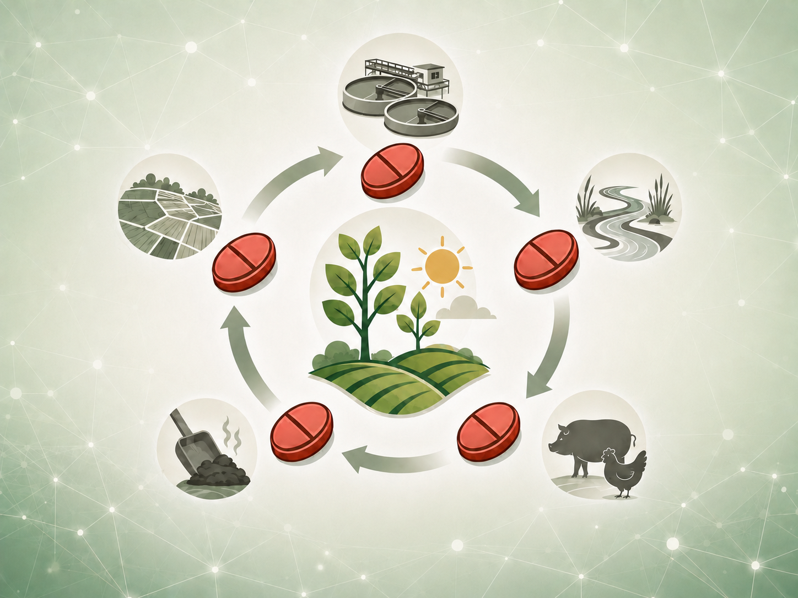
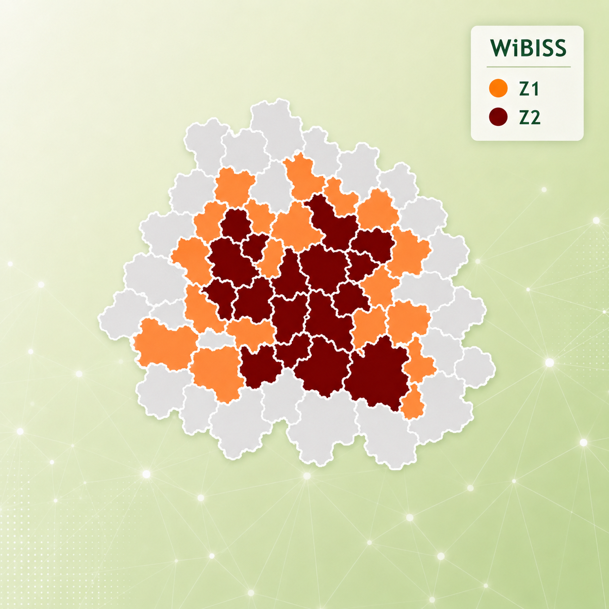
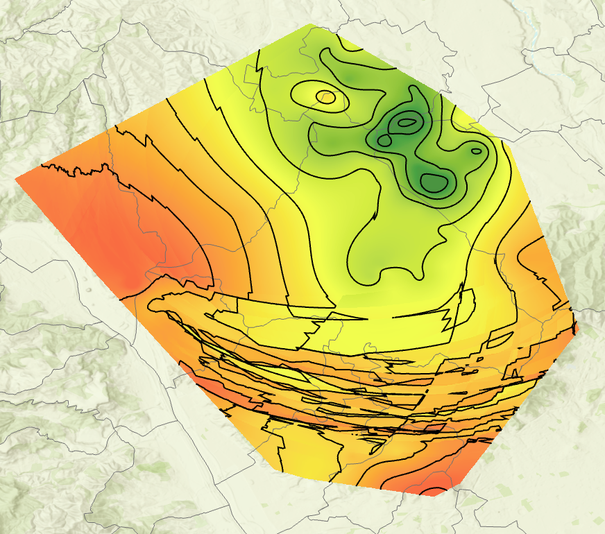

GIS and remote sensing
ArcGIS Pro and Online, QGIS, Google Earth Engine, remote sensing and geospatial application development.
Applying physics and mathematics to agrotechnology through mathematical modelling and GIS algorithms.
Predoctoral researcher at the Animal Health Research Centre (CISA-INIA-CSIC), specialising in spatial epidemiology and real-time surveillance systems for emerging diseases under a One Health approach. I combine my background in Physics and Mathematical Modelling with GIS, data science and machine learning to develop early-warning systems for avian influenza and other transboundary diseases, including DiFLUsion, ProtectIA and SMARTe.

Programme jointly supervised by Irene Iglesias (Animal Health Research Centre, CISA-INIA-CSIC) and Ángel Martín del Rey (University Institute of Fundamental Physics and Mathematics, IUFFYM-USAL).
Development and application of an integrated epidemiological risk-assessment model using mathematical and computational modelling to analyse the factors associated with the introduction and spread of HPAI in wild birds and estimate transmission risk to livestock holdings.
ArcGIS Pro and Online, QGIS, Google Earth Engine, remote sensing and geospatial application development.
Machine learning and deep learning for research, Python, Docker, statistical analysis and reproducible workflows.
Numerical methods, differential equations and applied scientific simulation.
Health-risk analysis, transboundary diseases, veterinary pathology and digitalisation of the agricultural sector.
Scientific communication, literature review, qualitative research, languages and professional skills.
Application of WiBISS in northern Italy to explore how different wild-boar vaccination strategies could help control African swine fever and reduce its economic consequences.
Application of DiFLUsion in Spain to assess the risk of HPAI introduction associated with migratory bird movements.
A spatial framework integrating anthropogenic sources, territorial context and sampling points to standardise environmental antimicrobial-resistance surveillance and enable reproducible comparisons across regions.
DiFLUsion is evolving into an operational early-warning system co-developed with surveillance authorities that connects spatio-temporal modelling, user needs and health policy.
Open link ↗A rapid-assessment viewer that interprets the speed and direction of the African swine fever epidemic front to prioritise surveillance and control measures geographically.
Open link ↗A spatial simulation of wild-boar vaccination strategies against African swine fever that translates scenarios into trade restrictions and potentially avoidable losses for pig producers.
Open link ↗A web tool that centralises georeferenced observations to record, visualise and explore marine-mammal strandings for research and surveillance.
Multiple collaborative sessions with national and international organisations, public authorities and other stakeholders involved in health surveillance, providing epidemiological analysis, risk interpretation and tools to support decision-making and preparedness for possible disease introductions.
Workshop on the role of passerines in the connectivity of avian influenza and antimicrobial resistance under climate-change scenarios.
International course on risk analysis for transboundary animal-disease control, delivered for WOAH's Sub-Regional Representation for South-East Asia.
Applied training in artificial intelligence, big data and digitalisation for animal-health and veterinary-medicine research.
Mentoring students during an immersive scientific-research placement at CISA-INIA/CSIC.
Supervision of external placements focused on the spatio-temporal distribution of animal diseases.
Supervision of a bachelor's thesis on mathematical tools for temporal smoothing of migration routes.
Supervision of external placements on the spatio-temporal distribution of highly pathogenic avian-influenza outbreaks in Spain.

01DiFLUsion is a mathematical model that estimates the risk of HPAI introduction from migratory connections between outbreak areas and areas susceptible to emergence, integrating epidemiological, spatial and temporal information.
Open reference ↗
02Prioritises livestock districts and poultry holdings according to their risk of HPAI introduction. It integrates wild-bird presence, territorial context, livestock density and biosecurity, translating multi-criteria analysis into operational maps for surveillance, prevention and resource allocation.

03A geospatial digital framework for standardising and comparing environmental pressure associated with antimicrobial resistance (AMR) from anthropogenic sources. It integrates territorial characteristics and user-defined study points to facilitate cross-study analyses.
Open reference ↗
04WiBISS es una herramienta de simulación geoespacial basada en autómatas celulares para evaluar estrategias de vacunación en jabalí frente a la peste porcina africana y estimar su impacto sobre las restricciones comerciales y las pérdidas económicas del sector porcino.
Open reference ↗
05FrontWave is a spatio-temporal analysis framework for reconstructing the early advance of an epidemic from georeferenced observations. It compares spatial-selection and interpolation strategies to generate arrival-time surfaces and characterise territorial spread.
Open reference ↗Interactive web dashboards for exploring and visualising epidemiological events alongside spatial, temporal and environmental data. Developed to support the EySA group's analyses, they facilitate consultation, interpretation and monitoring of the epidemiological situation.
Open reference ↗Hover, use the arrow keys or tap a card to explore.
Talk on how physics, mathematics and data can help track and anticipate an epidemic.
Open link ↗Mentoring students so they can experience scientific work and research methods first-hand.
An interactive activity exploring the spread and transmission chains of infectious agents through play.
Open link ↗An interactive workshop focused on observation, data and decision-making during outbreaks.
An interactive activity exploring the spread and transmission chains of infectious agents through play.
Open link ↗Artificial Intelligence Research Institute (IIIA-CSIC) · Barcelona · February 2026
Instituto de Estudios del Huevo · Madrid · October 2024
University Institute of Fundamental Physics and Mathematics (IUFFYM) · Salamanca · January 2021
Language